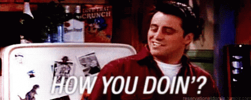

HOW R YOU???

How to respond to "How are you?", "What's up?", and other ...
www.phrasemix.com/collections/how-to-respond-to...
How are you? How's it going? What's up? What's happening? You've certainly heard these questions, but you might be confused about how to answer. Here's a list of common answers to them: How are you? Fine. This is a simple, straight answer. If you don't say anything else,
though, it might be a signal that you don't want to continue the ... How to answer "How are you?" correctly in English | Speak English
christinarebuffet.com/.../english-basics-how-are-you May 30, 2018 · How do you usually respond to “How are you?” Have you ever made the mistake and told the person all about your day? Share your stories in the comments below, because I’m sure<
they’re funny! And there’s no shame, because everyone makes mistakes in a different culture, especially me. All the best to you, Christina. P.S.
How to respond to HOW ARE YOU? 8 Examples - MyEnglishTeacher ...